Poprvé ve švédském národním parku
Publikováno 26. 2. 2018 (21:45) v kategorii Švédská příroda • Napsala Ivana Doležalová • Přečtete za 9 minut
O víkendu jsem se poprvé odvážila opustit hranice Stockholmu a vydala jsem se do jednoho z 29 národních parků Švédska. Jmenuje se Tyresta, je ze všech nejblíže Stockholmu a z města se tam dostanete MHD.
Je to o botách
Ještě než se dostanu k samotnému popisu nespoutané přírody, chci se s vámi podělit s krátkou historkou o tom, jak jsem se vzdala.
Zhruba před rokem jsem objevila kouzlo bosých bot (barefoot) a naprosto jsem mu propadla. Vyhodila jsem všechny klasické boty a zapřísáhla se, že už je nikdy neobuji. Strávila jsem opravdu hodně času hledáním bosých zimních bot vhodných do švédské zimy a než napadl první sníh, byla jsem s nimi náramně spokojená. On by ani tak nebyl problém ve sněhu, jde spíše v ledovkou pokrytých chodnících. Přestože musím říct, že se Švédové starají o chodníky znamenitě, je počasí bohužel často rychlejší a mocnější a narazit ve Stockholmu na ledovku není nic neobvyklého. A to vůbec nemluvím o tom, když se vydáte někam do přírody - bohatě stačí do jednoho z mnoha stockholmských parků - kde se chodníky neošetřují vůbec.
Poté, co jsem se několikrát smýkla na ledu a praštila sebou o zem, jsem již měla k chůzi po ledu patřičný respekt a o to více mě dokázalo dožrat, když jsem se plazila někam chůzí slimáčí a kolem mě proběhli Švédi jakoby nic. Dlouho jsem si lámala hlavu nad tím, jak to sakra dělají, že neuklouznou, až jsem si všimla, že mají někteří z nich na nohou speciální protiskluzové návleky s hroty. Záhada sice byla vyřešená, ale pouze částečně, protože tyto návleky neměli ani zdaleka všichni z nich.
Po dvou měsících a zhruba desátém držkopádu mi došla trpělivost. Poraženecky jsem vešla do obchodu se sportovní obuví s úmyslem pořídit si švédské zimní boty a s rozhodnutím, že barefoot prostě do léta musí jít stranou. A nestačila jsem se divit. Každý druhý model nabízel vodotěsnost (pozor, nikoliv pouze voděodolnost), vlastnost u bot v českých končinách poměrně vzácnou, a - především - se všichni výrobci předháněli na reklamních tabulích v tom, kdo vynalezl lepší protiskluzový systém pro tuto sezónu. Takže některé modely mají zabudované nejrůznější hroty vhodné spíše do přírody, některé modely mají jiná řešení vhodná i do města. Řada výrobců nabízí velice přesvědčivou metodu, jak se o jejich protiskluzové úpravě přesvědčit - záruku, že pokud se v jejich botách smýknete na ledu, vrátí vám peníze.
Vybrala jsem si pár bot vhodných na procházky do města i do přírody s Gore-Tex membránou a zařadila se tak mezi místní, kteří se cítí na ledu sebejistě. Nohy mám v suchu a v teple a můžu klidně běhat po ledu, nevnímaje rozdíl, jestli jdu po ledovce nebo po asfaltu. Záhada byla po dvou měsících definitivně vyřešena.
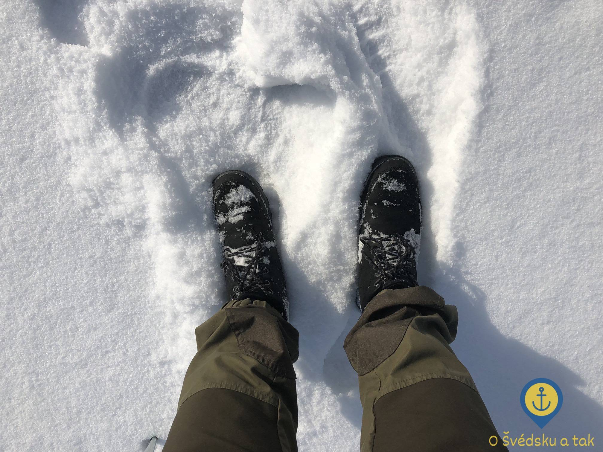 Zázrak jménem švédské zimní boty
Co k tomu ještě říct? Snad jen, že lituji toho, že jsem se nevzdala dřív. Pokud sem přijedete s jakýmikoliv zimními botami z ČR, věřte, že Švédové mají desetkrát lepší, protože musí. Vyhoďte ty vaše do koše a kupte si nějaké, ve kterých přestanete trpět a začnete si užívat nekonečných nádherných procházek švédskou zimní přírodou, třeba v Tyrestě. Nové boty se prostě musely pořádně vyzkoušet.
MHD do jiného světa
Nejde jet do Stockholmu a minout při tom stockholmské hlavní nádraží T-Centralen. Tam stačí sednout na pendeltåg (příměstský vlak) číslo 43 směrem na Nynäshamns, v Handen přestoupit na autobus číslo 843 a svézt se až na konečnou do Tyresta by, malé vesničky, která je vstupní branou do národního parku Tyresta.
Mapu si buď můžete prohlédnout až na místě nebo si ji předem nastudovat z internetu - klidně hned teď, pokud se chcete alespoň trochu zorientovat v oblasti, o které budu psát :-)
{kind=link}
Nejspíše je zbytečné říkat, že se ocitnete v naprosto jiném světě - v nádherné, nespoutané a nedotčené přírodě, kde se budete cítit hodně daleko od všedních starostí, odpočinete si a naberete energii do mnoha dalších dní. Pro mě byla tato návštěva doposud nejšvédštějším zážitkem vůbec, se kterým se může srovnávat jen opravdu málo věcí, které jsem kdy zažila. Fakt, že venku mrzlo jako když praští a pocitově bylo -14 °C (a někde i o dost méně), přestože zcela výjimečně dopadaly za zem i krátké paprsky severského zimního sluníčka, tento pocit jen umocňoval. Prostě ideální den na 20 kilometrovou túru a opékání buřtů.
Napříč jezerem Lycksjön
Neměla jsem žádné tušení, kam chci dojít a co je mým dnešním cílem, tak jsem prostě koukla na mapu, vybrala si stezku, kde bylo nejméně lidí a šla. Vydala jsem se tak z Tyresta by doleva, směrem k jezeru Lycksjön (lze přeložit jako Šťastné jezero, čte se jako [lykchén]). První část k jezeru jsem absolvovala po stezce Hällmarkslingan (lze přeložit jako Odkryvový okruh, čte se jako [helmarkslingan]) a na prvním rozcestníku jsem úmyslně z okruhu odbočila a pokračovala doleva k jezeru Lycksjön s tím, že se případně později na okruh vrátím.
Jakmile jsem došla k okraji jezera, stezka z ničeho nic skončila a dále pokračovalo závějemi jen několik málo lidských stop, které jsem se rozhodla následovat. Po pár metrech se mi naskytl neuvěřitelný výhled na zcela zamrzlé jezero Lycksjön.
 Pohled na zamrzlé jezero Lycksjön skrz stromy
Pohled na zamrzlé jezero Lycksjön skrz stromy
O tom, že tato stezka nebyla v zimě moc používaná, svědčil i fakt, že se nikdo nenamáhal s odklízením popadaných stromů, které bránily v jejím průchodu.
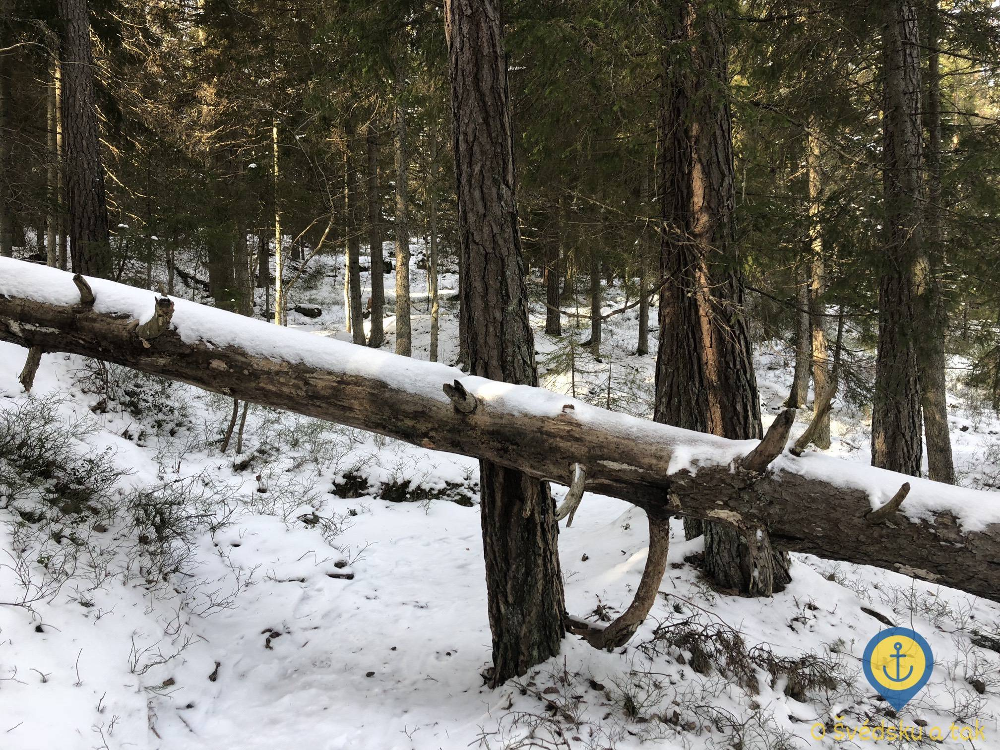 Na spadlé stromy přehrazující stezku narazíte docela často
Jakmile jsem trochu více vykoukla z lesa, pochopila jsem proč - v zimě se totiž hlavní stezka přesunula na jezero, po kterém bylo mnohem jednodušší chodit, než klouzat po zasněžených strmých skalách. Ještě asi kilometr jsem byla k ledu nedůvěřivá a zkoušela jezero obejít, což bylo ale čím dál složitější, protože čím dál více stop odbočovalo z mojí stezky na jezero. Odvahu mi dodalo až několik běžkařů, kteří se proháněli po zamrzlém jezeře jakoby nic. Vyšlapala jsem si tedy vlastní stezku pobřežím a hurá na jezero. Prvních pár kroků bylo nejistých, ale led byl pevný jako skála a navrch pokrytý několika centimetry sněhu. Kdybych nevěděla, že stojím na jezeře, asi bych to ještě dlouho nepoznala.
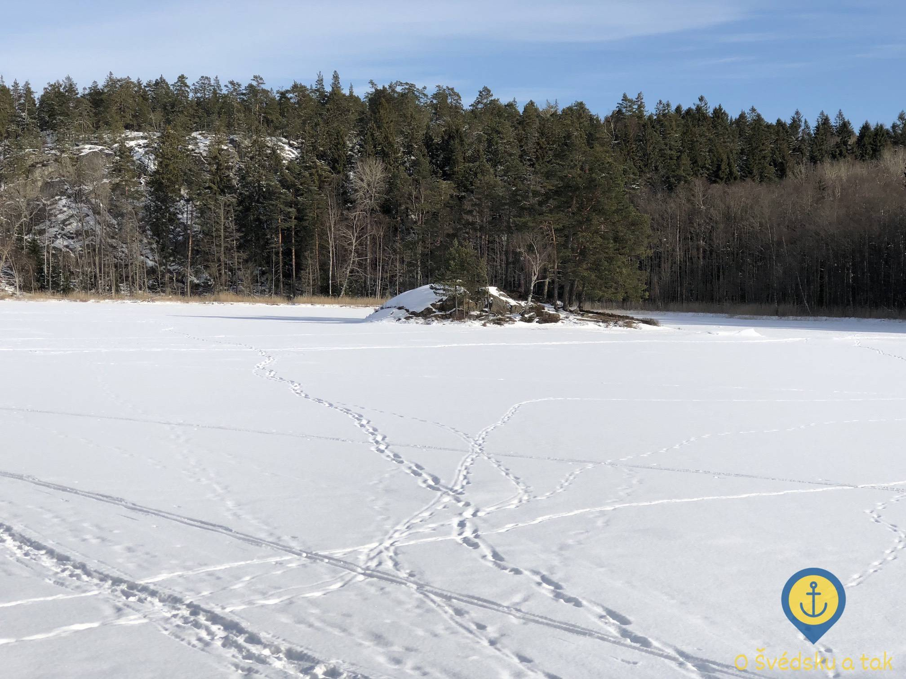 Po svých se na ostrůvek uprostřed zamrzlého jezera Lycksjön dostanete jen v zimě
S úžasným pocitem a sluncem a větrem v zádech jsem se vydala následovat stopy zimní jezerní stezky neznámo kam. Jezero bylo tak obrovské a byl z něj tak nádherný výhled, že jsem se prostě nechala naprosto unést okamžikem a prostě jen šla a šla.
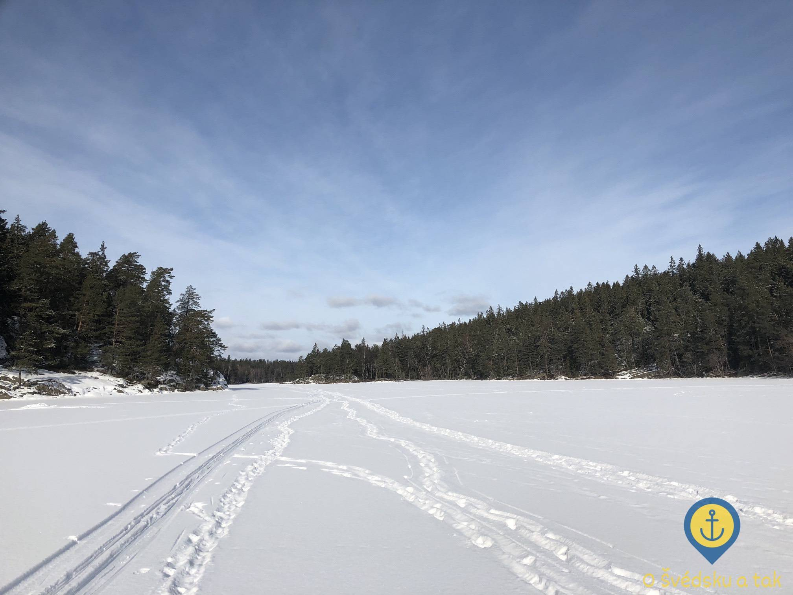 V zimě se ze zamrzlého jezera Lycksjön stane jednoduše dálnice
Asi za tři kilometry chůze po zamrzlém jezeře se začaly objevovat první známky civilizace. Domy při pobřeží byly naprosto nádherné a neuměla jsem se v tu chvíli rozhodnout, jestli tam je bydlení hezčí v zimě, kdy vyběhnete z terasy přímo na jezero a poběžíte, kam vás nohy ponesou, nebo v létě, kdy vám u domu bude kotvit plachetnice a venku vanout příznivý vítr lákající k projížďce. Takhle nějak si představuji bydlení snů.
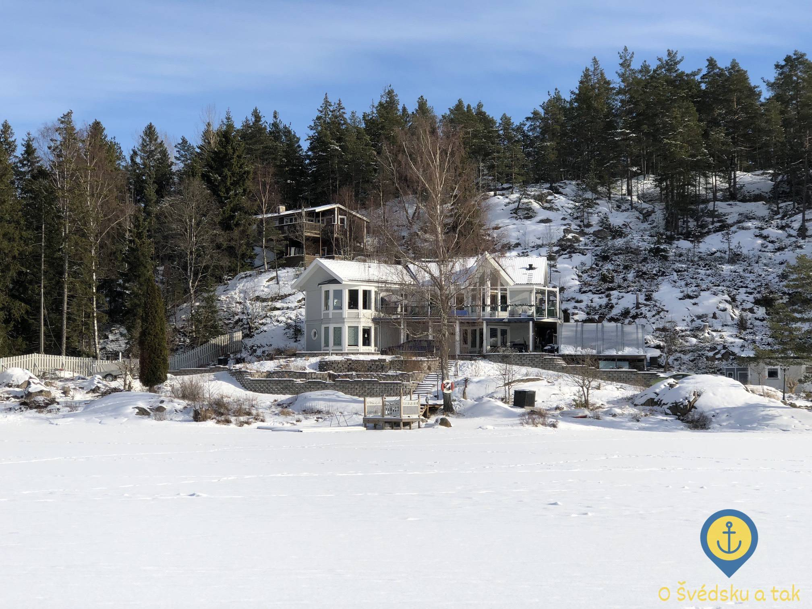 Doslova pohádkové bydlení na pobřeží jezera Lycksjön
Na samotném severním konci jezera, který už se nachází mimo Tyrestu, leží vesnička Lyckebyn. Ať už pro zimní turisty, kteří se přiženou po jezeře, nebo pro letní opékačky při půlnočním západu slunce, se na pobřeží nachází turistické odpočívadlo s typickým vybavením v podobě dřevěného stolku s lavičkami a ohništěm.
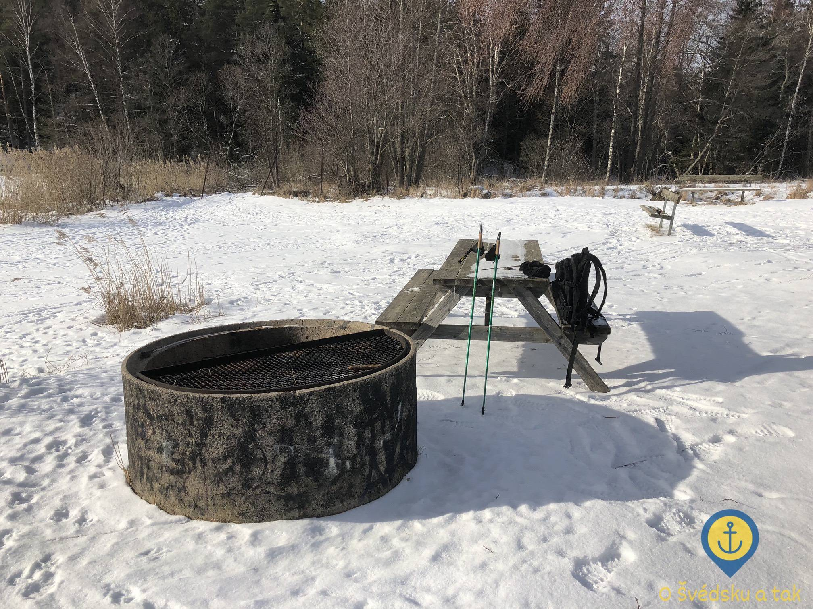 Stolek s lavičkami a ohniště - klasické turistické odpočívadlo
Na buřty byl ale ještě čas, tak jsem snědla jen malou svačinu, dala si hrnek teplého čaje a po pečlivém zhodnocení situace, kudy nejlépe zpět do Tyresty, jsem se vydala nazpět po zamrzlém jezeře - za prvé jsem chtěla zpět na okruh Hällmarkslingan a za druhé jsem si to prostě chtěla ještě užít. V létě budou přeci jen některá místa po vlastních nohou nedostupná.
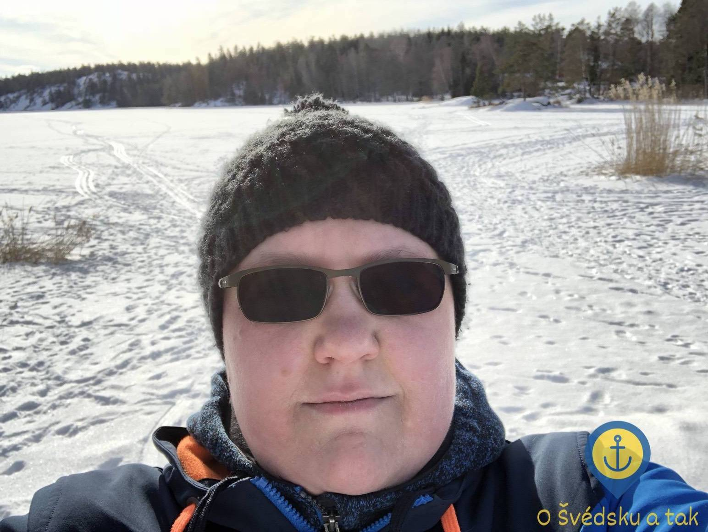 Ještě jednu selfie a potom marš zpátky po jezeře
Po cestě zpátky už se jezero obcházet nepokouším a směřuji rovnou k jeho jižnímu konci. Na původní stezku se tak vracím trochu jinou cestou a objevuji toto nádherné místo. Napříč parkem se nachází mnoho dřevěných lávek a mostíků, které v zimě často postrádají svůj význam, protože potůčky a bažinaté oblasti jsou jednoduše zamrzlé. O to vzácnější bylo objevit malý šumící potůček, který ústí do jezera Lycksjön a který zamrzlý nebyl.
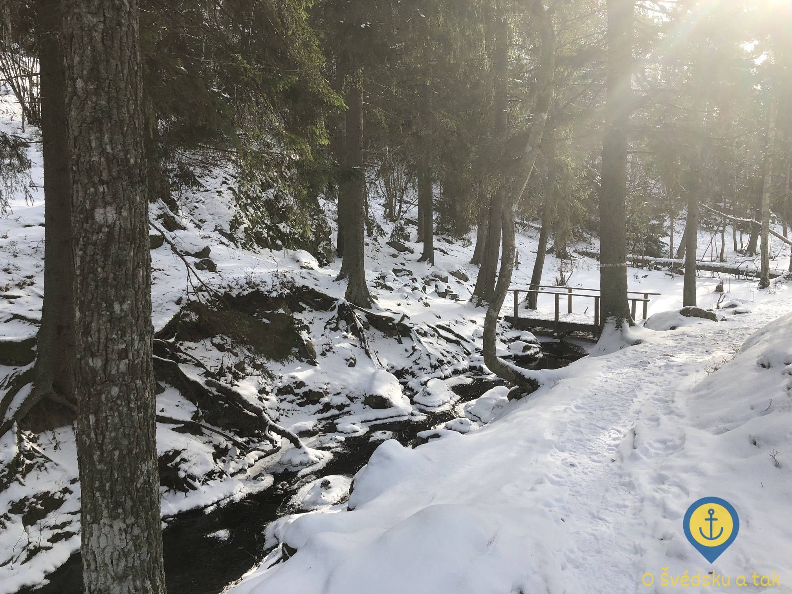 Mosty se občas hodí i v zimě, i když ne příliš často
Okruhem Hällmarkslingan přímo do srdce parku
Na mi již dobře známé křižovatce se vracím na okruh Hällmarkslingan a pokračuji neznámo kam. Podle rozcestníku je to k tomu dalšímu 5 km, budiž. Konečně překračuji magickou hranici národního parku a vydávám se přímo do jeho útrob. Po cestě se opět nechávám unést nádhernou přírodou a jen se snažím hádat se svým nemožným orientačním smyslem, kterým směrem asi tak jdu. Kupodivu, v přírodě funguje lépe, než ve městě, takže když občas zkonzultuji své vnitřní pocity s GPS, nejsem až tak překvapená, kde se zrovna nacházím.
Všechny okruhy jsou značené žlutým čtvercem pootočeným na hranu. Někde je značení časté tak, že vidíte další 3 značky, někde několik metrů nevidíte značku žádnou. Po hodně dlouhé době se tak dmu pýchou nad něčím tak typicky českým, jako jsou turistické značky, protože místní systém strčí do kapsy opravdu naprosto s přehledem.
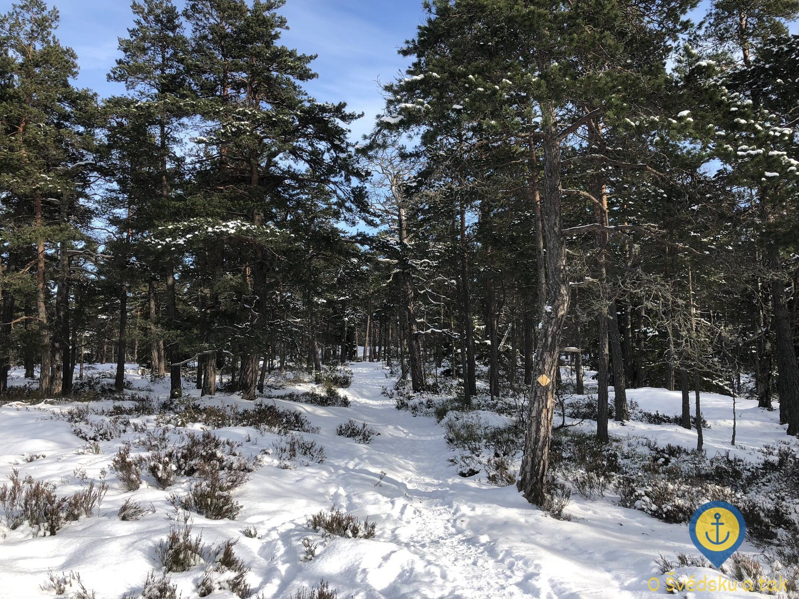 Turistický okruh Hällmarkslingan, nenápadný žlutý čtverec na stromě je turistická značka
Nicméně, přinejmenším v zimě je navigace v terénu díky stopám opravdu snadná a ztratit se nelze, sledovat značky netřeba. Tady již sem tam narazím na nějaké lidi v protisměru, se kterými se na sebe usmějeme, pozdravíme se klasickým švédským hej hej a pokračujeme každý svým směrem. Když už začínám pochybovat o tom, jak dlouhých je vlastně pět kilometrů, vyloupne se přede mnou další rozcestník.
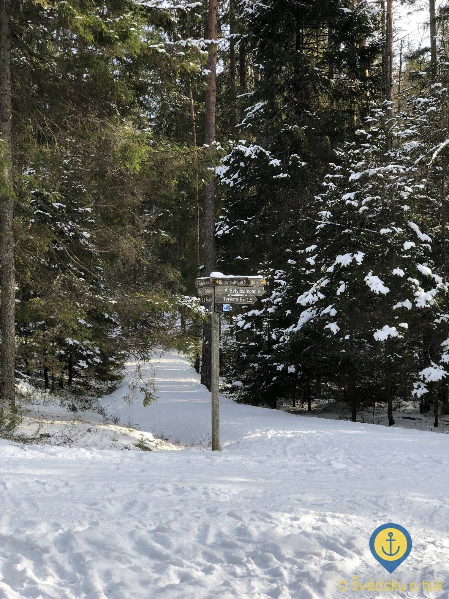 Klasický rozcestník
Vida, nacházím se coby kamenem dohodil od centrálního jezera Bylsjön (pokud lze název nějak přeložit, tak nevím jak, čte se to jako [bylchén]). Chvíli zvažuji rozdělání ohně, potom ale dostanu zprávu od lidí, se kterýma se mám později potkat a kteří mají také v úmyslu opékat. Zůstávám tedy pouze žasnout nad tím, jak jsou veškerá místa určená ke kempování čistá, uklizená a přichystaná pro další návštěvníky.
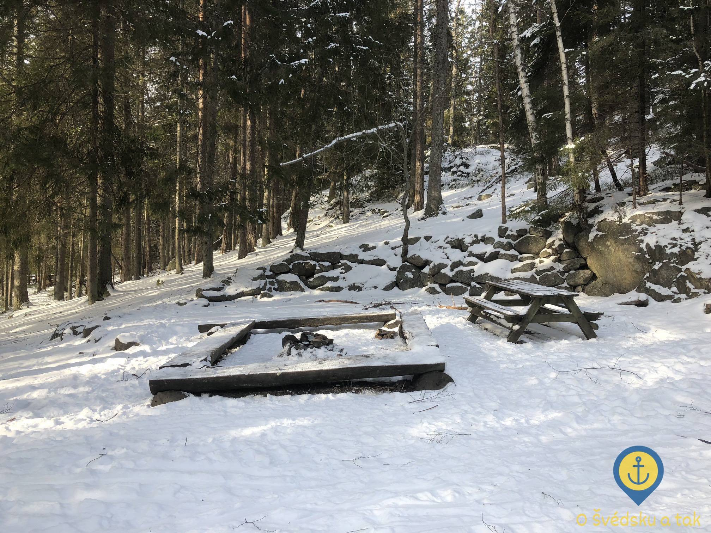 Jedno z mála centrálních ohnišť, kde neplál ten den táborák
Korunu tomu všemu nasazuje zastřešená bedna se dřevem, které je určené k veřejnému použití. Nad nápisem nabádajícím k tomu, ať si ověříte, zda rozdělání ohně nebrání příliš velké sucho, se vzhledem k ročnímu období jen ušklíbnu a vydám se směrem k jezeru Bylsjön, které hodlám pouze minout a dále se vydat již do své cílové destinace pro tento den, totiž k tábořišti na pobřeží jezera Årsjön (lze přeložit jako Roční jezero, čte se jako [órchén]).
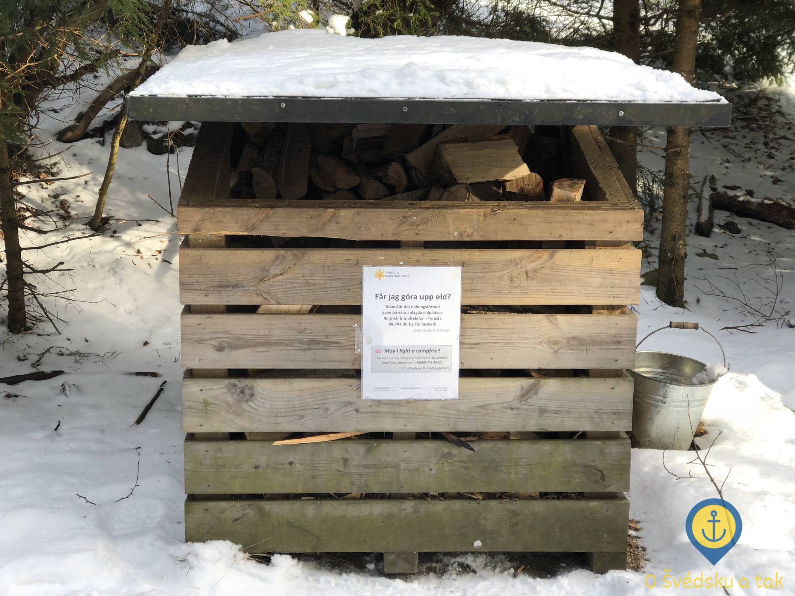 Suché dřevo na oheň se hodí především v zimě
Mrazivý oběd
Lze poznat, že jsem na hlavní trase a že je čas oběda. Po cestě míjím spoustu lidí a další spousta lidí okupuje místa s ohništi a opékají párky, chleba nebo cokoliv jiného, co se dá v této zimě sníst nejen pro ukojení hladu, ale především pro zahřátí. Na stezce k jezeře Årsjön potkávám usměvavého chlapíka se svým odhadem rok starým synem, který se učí napůl chodit a napůl padat ve sněhu. Prosí mě o fotku, vyhovím a prohodíme spolu pár slov. Dovídám se, že je na rodičovské dovolené, takže tráví většinu času v přírodě, pochopitelně se synem. Dneska se chystají v tábořišti, kam mám také namířeno, nocovat. Naprosto úžasné! Dialog zakončíme něčím ve Švédsku naprosto nevídaným - chválíme sobotní počasí. Musím ale - zcela výjimečně - uznat, že bylo fakt proč.
Jakmile dorazím k tábořišti, známí tam ještě nejsou, tak čekám a snažím se chytat rozhovory místních, ke kterým jsem se v tábořišti připojila. Skupinka, která zde spala z pátku na sobotu, odchází, táta se synem přichází. Nachystá si v přístřešku věci na spaní, zabalí syna do dětského spacáku a přisedne si s ním k ohni. Všichni přítomní si připravují na ohni nebo na vařiči oběd a povídají si, jako kdyby byla tato událost naprosto všední. Pro mě ale všední není, jsem stále okouzlena tím vším okolo, nyní už nejen přírodou, ale i místními lidmi, kteří jsou neskutečně přátelští a milí. A hlavně naprosto spjati s přírodou. Ne, že by se u nás v zimě netábořilo, ale tady je to něco natolik běžného a normálního, že nikoho ani nenapadne, že by to někde na světě mohlo být jinak.
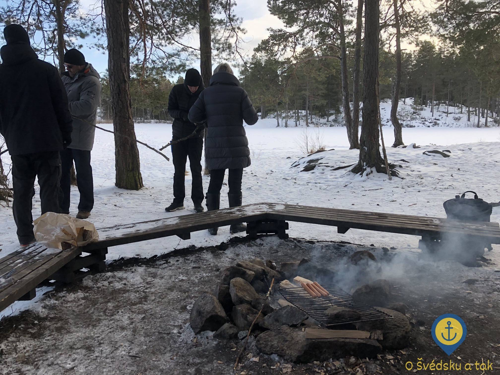 Táborák u jezera Årsjön a něco k snědku
Když konečně dorazí známí, je už mi pořádná zima - ač sedím u ohně, lze znát, že s sebou nemám nic na přioblečení pro případy, kdy se nehýbu. S vděčností přijímám nabízený párek a užívám si každý kousek tepla, který z něho sálá. Po jídle je zima všem a navíc víme, že za chvíli začne padat tma, takže se vydáváme zpátky kolem jezera Bylsjön do Tyresta by, kde nás čeká konec dnešního úžasného výletu.
Sladká tečka na závěr
Vlastně, ne tak rychle, kavárna je ještě otevřená a to ve Švédsku znamená jediné - je čas na fiku.
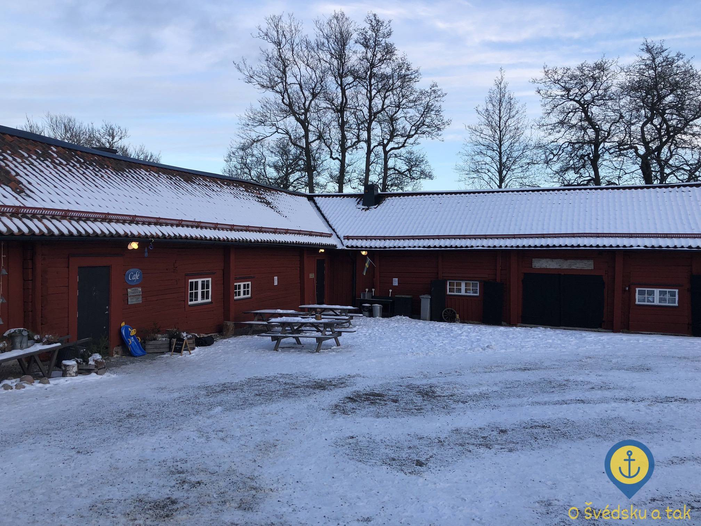 Kavárna ve vesnici Tyresta znamenala zaslouženou fiku po 20 kilometrech a konečně i teplo
Po celém dni konečně v teple, pomalu roztávám a užívám si horkou kávu a zákusek. Stále plná dojmů jsem dost překvapená, když mi krokoměr ukazuje, že jsem za celý den nachodila 20 kilometrů. Tedy, správně bych měla říct 2 míle - kilometr není ve Švédsku vzhledem k ohromným vzdálenostem žádná jednotka a míle tady nemá nic společného s imperiálním systémem. Je to prostě a jednoduše 10 kilometrů.
Ať tak nebo tak, skončil jeden úžasný den, který zůstane ještě velice dlouho v mojí paměti. Přestože jsem si jistá, že se ještě mnohokrát to Tyresty vrátím, prvnímu úžasu se to už asi nevyrovná.
Jo a - víte co? Švédské boty se naprosto osvědčily :-)